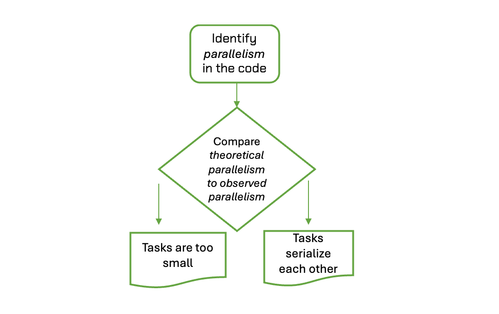

Intra node level benchmarking
Last updated on 2026-10-16 | Edit this page
Estimated time: 50 minutes
Overview
Questions
- How a code scale across a whole node?
- How do we interprate parallelism by using performance analysis tools? #fixme (performance anlaysis tools something meant to default per lesson where added user profiles on Azimuth)
Objectives
- Understanding scalability before running a whole node test
- Distinguish parallesiation of code frantions and identify their scaling
- Providing guidance on code’s behaviour on a pre-defined architecture
- Evaluation of Amdahl’s Law and blancing the performance
After learning how to learn our codes utulize in a single core, now we can dig into node level performance analysis. We also called it “intra node” which means basically inside the node. At this point, we will touch practice of Amdalh’s Law again weather our code make good use of parallelisation or not. To understand this we can benefit from below graph.

Select the appropriate kernel to let you generate perforamnce analysis backend within Moodle service.
#fixme add kernel info from Azimuth

Which branch of the decision graph?
Let’s say we have two codes both have plenty of parallel work in principle, yet both scale poorly on a single node. Using the decision graph, decide which branch each one belongs to.
Code A. The code creates millions of very short tasks, each running for only a few microseconds. The profile shows most of the time going into the OpenMP runtime (barrier and overhead functions), and effective CPU utilisation is well below 80%.
Code B. The code creates a moderate number of tasks, and each one contains a loop with a very small critical section. The profile shows a large amount of spin time in the threading back-end, even though all threads look busy.
- Which branch does each code belong to?
- What evidence in the description points to that branch?
Code A: tasks are too small. Concurrency is high, but creating and cleaning up each task costs more than the work inside it. The overhead shows up in the runtime rather than in your own functions, which is why the runtime dominates the profile. A reasonable task should run for at least tens of microseconds.
Code B: tasks serialise each other. The tasks look parallel, but each one briefly locks the others out, so in effect they run one after another. Many short critical sections in a row appear as heavy spin time in the threading back-end.
In both cases the symptom is the same: parallelism exists in theory but not in the measurements. The evidence inside the profile is what separates the two branches.
Coverage
If only a small fraction of the code is parallelised, that fraction limits how well the code scales as you add cores.
Rather than using a node run straight away, we first measure how the code scales, and then ask what that scaling says about how much of the code is actually parallel.
Amdahl’s Law, from Episode 1, models the runtime on \(p\) threads as:
\(t(p) = t(1)\left(\dfrac{f_{intra}}{p} + (1 - f_{intra})\right)\)
Here \(0 \le f_{intra} \le 1\) is the parallel fraction: the share of the single-thread runtime that gets faster as threads are added, and scales perfectly in this model. The remaining share, \(1 - f_{intra}\), is the serial fraction and does not change with \(p\).
Dividing \(t(1)\) by \(t(p)\) gives the speedup, and dividing that by \(p\) gives the efficiency:
\(S(p) = \dfrac{t(1)}{t(p)} = \left(\dfrac{f_{intra}}{p} + (1 - f_{intra})\right)^{-1}\)
\(E(p) = \dfrac{S(p)}{p} = \dfrac{1}{f_{intra} + (1 - f_{intra})\,p}\)
Letting \(p \to \infty\), the speedup can never exceed:
\(S_{max} = \dfrac{1}{1 - f_{intra}}\)
In this lesson, \(s = 1 - f_{intra}\) is the serial fraction. Wherever a threshold such as 0.2 is quoted below, it refers to \(s\), not to \(f_{intra}\).
Suppose you want to keep efficiency at or above 80%. Setting \(E(p) \ge 0.8\) and rearranging gives a limit on the serial fraction:
\(s \le \dfrac{0.25}{p - 1}\)
| Threads \(p\) | Largest serial fraction \(s\) for \(E \ge 80\%\) |
|---|---|
| 4 | 8.3% |
| 8 | 3.6% |
| 16 | 1.7% |
| 64 | 0.4% |
A code that is 98% parallel looks excellent, yet it falls below 80% efficiency on 16 threads. This is why a scalability study should come before an exculisive node run.
Calibration
Now, we can look at rearranging the speedup formula for \(f_{intra}\) gives:
\(f_{intra} = \dfrac{p\,(S(p) - 1)}{S(p)\,(p - 1)}\)
Here is an example with \(t(1) = 100\) s:
| \(p\) | \(t(p)\) [s] | \(S(p)\) | \(E(p)\) | Estimated \(f_{intra}\) |
|---|---|---|---|---|
| 2 | 55 | 1.82 | 0.91 | 0.90 |
| 4 | 32.5 | 3.08 | 0.77 | 0.90 |
| 8 | 21.3 | 4.71 | 0.59 | 0.90 |
| 16 | 15.6 | 6.40 | 0.40 | 0.90 |
The estimate stays at 0.90 for every \(p\). The serial fraction is \(s = 0.10\), and the speedup can never exceed 10.
Let’s suppose the last two runs had given \(t(8) = 26\) s and \(t(16) = 25\) s. The estimates become 0.85 at \(p = 8\) and 0.80 at \(p = 16\). The estimated \(f_{intra}\) drifts downwards as \(p\) grows, and hence the model does not represent the code well enough. The runtime has flattened, which is a sign of overhead or lack of concurrency rather than a fixed serial fraction.
Evaluation
- The model fits and \(s\) is small (well below 0.2). The code should scale in principle, and a strong scaling problem is unlikely. Trying different numbers of MPI ranks per node can reduce the effect of the serial part even further.
- The model fits but \(s \ge 0.2\). If the code is parallelised throughout, then major parts are effectively serial, often because of imbalance or excessive synchronisation. Look at balancing next. If major code parts are not inside parallel regions, they simply are not parallelised.
- The model does not fit. A typical sign is a runtime that scales well up to some thread count.
Amdahl’s Law assumes a code is either perfectly parallel or perfectly serial. However, in scientific codes also have small loops and tasks that do not scale, critical sections that force serialisation, and thread overhead that grows with \(p\). Therefore the estimated \(f_{intra}\) is an effective parallel fraction, something you observe, not a literal split of your source code.
- Fitting Amdahl’s Law to measured strong scaling data gives an effective parallel fraction, \(f_{intra} = \dfrac{p\,(S(p)-1)}{S(p)\,(p-1)}\), and the model only fits if this estimate stays stable as \(p\) grows
- Even a small serial fraction costs a lot of efficiency: keeping \(E(p) \ge 80\%\) needs \(s \le 0.25/(p-1)\), so a 98% parallel code already drops below 80% on 16 threads
- When parallel work exists in theory but scaling is still poor, compare theoretical and observed parallelism, then use profiling evidence to separate the causes: unbalanced work, tasks that are too small, or tasks that serialise each other